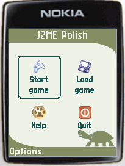

<%define inScreenshotsSection %>
<%set title = J2ME Polish: Screenshots %>
<%include start.txt %>
	
	<div id="content">
	<h1 id="top">Screenshots</h1>
	<p>J2ME Polish makes it easy to adjust the design to specific devices or
	device groups. You can try completely different designs just
	by using a different resources-folder. For the application
	screen-shots a simple <a href="screenshot-application.html">application</a> is used, which just shows
	a main menu with the standard <code>javax.microedition.lcdui.List</code> 
	class.</p>
	<h2 id="enough">A Design Featuring a Turtle</h2>
	<table><tr>
		<td></td>
		<td></td>
	</tr><tr>
		<td colspan="2">The enough design uses two columns and a transparent menu-bar.
		<br /><a href="screenshots-turtle.html">Show polish.css</a>
		<br /><a href="downloads/resources-turtle.zip">Download resources</a>.
		</td>
	</tr></table>
	<h2 id="barbie">A Barbie Design</h2>
	<table><tr>
		<td></td>
		<td></td>
	</tr><tr>
		<td colspan="2">The barbie design uses the after attribute for the focused-style.
		<br /><a href="screenshots-pink.html">Show polish.css</a>
		<br /><a href="downloads/resources-pink.zip">Download resources</a>.
		</td>
	</tr></table>
	<h2 id="other">Other Designs</h2>
	<p>Please send me your designs to <a href="mailto:j2mepolish@enough.de">j2mepolish@enough.de</a>,
	so I can add them to this list.</p>
	<h2 id="items">GUI Items</h2>
	<p>J2ME Polish supports all MIDP items, e.g. the choice-group and the gauge item:<br/>
	
	</p>
	<p>
	The text- and date-input fields can be layouted to get a clear and good looking form.
	This example uses - as every other one on this page - only the standard MIDP GUI widgets.
	The programmer does not need to learn a new API.<br/>
	
	
	<br />
	In this example the label and the input text are set on one height, this makes the design
	much clearer and calm.
	</p>
<%include end.txt %>